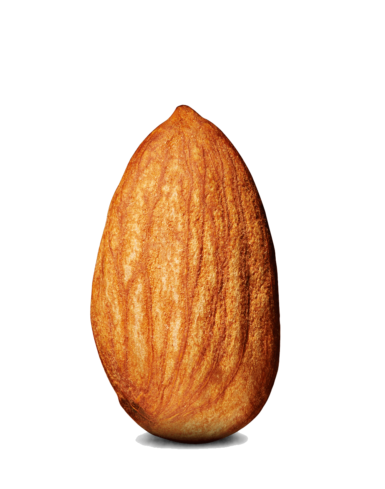

nuts for days! molten sugar is not only very hot, but very sticky.
two spoonfuls of butter (optional for butter taste)
five tablespoons or so of granulated sugar (white sugar is good, brown is fine too but nothing too coarse so it melts evenly)
three big handfuls (e.g. 250g) of almonds
sprinkle of salt
lay out a bit of baking paper, or else ready a smooth heatproof surface like a place.
heat a skillet or any wide pan, a less sticky one is easier.
melt the butter without burning it, turn the heat to medium-low if you're at risk.
scatter sugar in the pan in an even layer
don't interfere with the sugar; watch it slowly melt to a caramel, adjusting the position of the heat if one side is melting too quickly – it must melt evenly without burning. This should take about 3-4min.
once the sugar into a scalding hot golden brown ooze, or at the first sight of any sugar smoking/burning, stir all the nuts and coat them well in caramel. The nuts will also help to cool down any burning sugar before it becomes a black gooey mess.
add a generous sprinkle of salt into the mix if you like that sort of thing.
after the nuts are well coated - 10 seconds should do it - tip them out onto your surface and spread them evenly with a spatula while the caramel is soft. it will be brittle soon.
fill the (hot) pan with water so the caramel dissolves off cleanly. let the almonds cool before breaking them up.
once cooled, store them in an airtight container. don't store them while their still warm or the condensation will make them sticky.